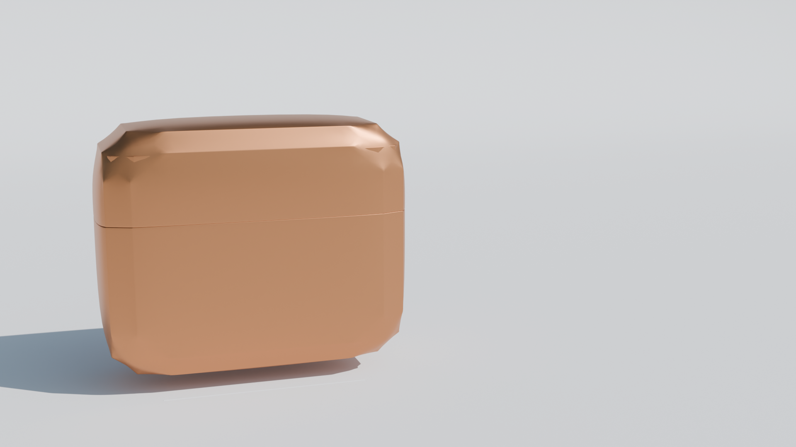

Balance
Board
Three wooden balance boards with organic leaf engravings — designed and rendered entirely in Blender. Form, material, and light working together.
3Variants
WoodMaterial
BlenderTool

Three wooden balance boards with organic leaf engravings — designed and rendered entirely in Blender. Form, material, and light working together.
The balance board is one of those products that looks effortless — until you try to make it look good. The challenge here wasn't the engineering, it was making something tactile and warm come through on screen. Natural wood grain, organic leaf patterns pressed into the surface, and three different rocker profiles, each with a slightly different feel.
All modelling and rendering done in Blender. No CAD-to-render pipeline — built and lit from scratch.
Three variants — different rocker shapes, same material language
A product this considered needs packaging that doesn't undercut it. The rounded box below was designed alongside the boards — compact, premium feel, soft edges. The kind of thing you'd keep on your shelf after unboxing.

Packaging render — rounded form, warm finish
Good rendering isn't about making things look perfect. It's about making them look real enough that you want to pick them up.